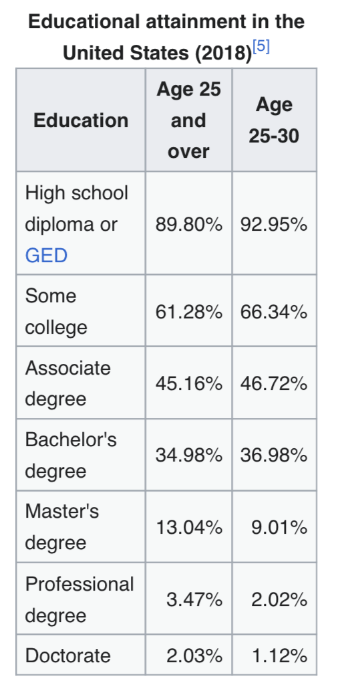
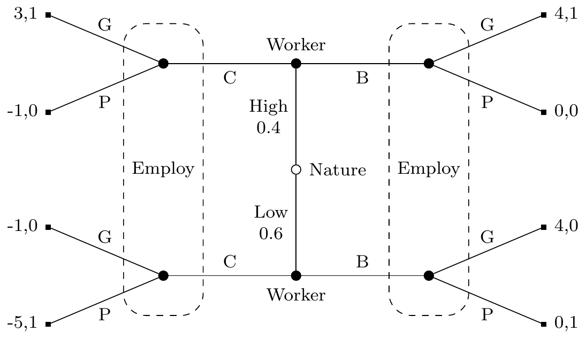

College as a Signal
2026-03-25
The Fact to be Explained
A Striking Wage Gap
Here is a well-documented empirical fact across almost every rich country: people who complete a college degree earn substantially more over their lifetimes than people who don’t.
This isn’t subtle. In the US, the lifetime earnings gap is well over one million dollars.
The gap is large enough, and consistent enough across countries, that it demands an explanation.
Earnings of Bachelor’s degree holders as a percentage of upper-secondary earnings (full-time workers, 2023 OECD data):
| Country | Premium |
|---|---|
| Chile | 228% |
| United States | 164% |
| Hungary | 148% |
| OECD average | 140% |
| United Kingdom | 137% |
| Switzerland | 134% |
| Korea | 133% |
| Australia | 130% |
| Denmark | 112% |
| Norway | 106% |
Data Source
All these data are from the OECD. To see the original, search for “Earnings of workers relative to the earnings of workers with upper secondary educational attainment, by age group, gender and educational attainment level”.
That will get you a datafile with 150,000 data points across different countries over the last couple of decades. I’m pulling some highlights out of it.
The premium is not constant across age. In most countries, older workers show a larger gap between degree holders and non-degree holders.
| Country | 25–34 | 35–44 | 45–54 | 55–64 |
|---|---|---|---|---|
| United States | 157% | 167% | 168% | 172% |
| Switzerland | 127% | 136% | 142% | 137% |
| Korea | 116% | 131% | 148% | 159% |
| United Kingdom | 128% | 138% | 151% | 144% |
| OECD average | 131% | 140% | 152% | 149% |
In Korea, the premium rises steadily from 116% to 159% across the working life. In the US, the rise is more modest but consistent.
Switzerland shows the same gradient in compressed form: from 127% for the youngest cohort up to 142% at ages 45–54, with a modest pullback to 137% near retirement.
The age pattern turns out to be concentrated among male workers. For women, the Bachelor’s premium is much flatter across age.
| Men 25–34 | Men 45–54 | Women 25–34 | Women 45–54 | |
|---|---|---|---|---|
| United States | 162% | 180% | 158% | 159% |
| Korea | 116% | 141% | 123% | 142% |
| United Kingdom | 130% | 154% | 141% | 151% |
In the US, male degree holders gain 18 percentage points between ages 25–34 and 45–54. Female degree holders gain almost nothing (158% to 159%).
The UK shows the same pattern more modestly: men gain 24 points, women gain 10. Korea is the partial exception, where both men and women see substantial growth in the premium with age.
Gender Differences
This is worth keeping in mind when we get to explanations. Whatever is causing the premium to rise with age, it seems to operate very differently for men and women.
The Sheepskin Effect
Before discussing explanations: there is a striking feature of the wage data that any good explanation must account for.
Completing two or three years of college gives you very little of the wage premium. The premium kicks in when you finish, when you get the degree.
This is sometimes called the sheepskin effect (after the old tradition of printing diplomas on sheepskin).
It is hard to explain if college simply develops valuable skills, why would three years of skills suddenly be worth dramatically more the moment a fourth year is complete?
The US “Some College” Anomaly
The sheepskin effect is especially stark in the US.

The US has an unusually large share of its population in the “some college, no degree” category. In most other countries, this group is too small to draw reliable conclusions from.
That makes the US a good place to test the sheepskin effect: there are millions of people who spent years in college but didn’t finish, and their wage premium over high school graduates is small.
Any explanation of the premium needs to explain why completion matters so much more than the years spent acquiring the degree.
The Pattern by Age
One more fact that will matter a great deal: the college wage premium is not constant across age.
Among workers aged 25–34, the premium is real but relatively modest.
Among workers aged 45–54, the premium is substantially larger.
Whatever is causing the premium seems to grow more powerful, not less, as workers age and accumulate experience.
Your Turn: First Conjectures
Before we go any further, why do you think employers pay so much more for college graduates?
Take two minutes to discuss with a neighbor. Try to come up with at least two different explanations that could in principle be true.
(Collect conjectures)
Three Explanations
The Three Standard Models
Economists and philosophers have identified three main families of explanation for the college wage premium:
Human capital: college develops skills that are genuinely valuable to employers. The premium reflects those skills.
Selection: colleges admit people who are already more capable. The premium reflects the prior ability of graduates, not anything college does.
Signaling: college is a costly hurdle that demonstrates ability to employers. The premium reflects the signal, not the skills.
These aren’t mutually exclusive, the truth may involve all three. But they have different implications, and the data can help us sort them out.
A Useful Test
Before accepting any explanation, it’s worth asking: what would the world look like if this were the whole story?
If human capital is everything, we’d expect partial degrees to have partial returns, three years should give three-quarters of the premium. We don’t see that.
If selection is everything, we’d expect admission letters to be nearly as valuable as degrees, employers would pay for the signal of admission, not completion. We don’t see that either.
If signaling is everything, we’d expect the premium even if college taught nothing useful. This one is harder to test directly.
Your Turn: Which Is It?
Which of these explanations do you find most plausible? What’s your best argument for your preferred view?
And: is there an explanation that none of these models capture?
(Discussion)
The Spence Model
Michael Spence
Michael Spence won the Nobel Prize in economics in 2001, partly for this model.
His 1973 paper “Job Market Signaling” showed how education could function as a costly signal even if it adds no productive skills whatsoever.
We’ll use a simplified binary version of his model. He uses a continuous version that is perhaps more realistic, but the logic is the same.
Structure of the Game
Three players: Nature, Worker, and Employer.
Nature assigns each worker a type: High (productive, able) or Low (less so). The worker knows their type; the employer doesn’t.
Worker chooses: go to College or go to the Beach (i.e., skip college and enter the job market).
Employer sees the worker’s choice (College or Beach) but not their type. Based on that, they offer either a Good job or a Poor job.
The Crucial Assumption
For the model to work, college must be more costly for Low workers than for High workers.
This doesn’t mean Low workers pay higher tuition. It means the effort, stress, and opportunity cost of completing a degree are greater for people with less ability.
High workers find college demanding but manageable. Low workers find it genuinely painful, or can’t finish it at all.
This differential cost is what makes college a potentially credible signal.
Payoffs
For the employer: they get 1 if they match correctly (Good to High, Poor to Low), and 0 otherwise.
For the worker: a Poor job pays 0; a Good job pays 4. Going to the beach costs nothing. Going to college costs 1 if you’re High, 5 if you’re Low.
| Type | Choice | Offer | Worker | Employer |
|---|---|---|---|---|
| High | College | Good | 3 | 1 |
| High | College | Poor | −1 | 0 |
| High | Beach | Good | 4 | 1 |
| High | Beach | Poor | 0 | 0 |
| Low | College | Good | −1 | 0 |
| Low | College | Poor | −5 | 1 |
| Low | Beach | Good | 4 | 0 |
| Low | Beach | Poor | 0 | 1 |

Figure 1: College or Beach signaling game
The Separating Equilibrium
This game has a separating equilibrium:
- High workers go to College; Low workers go to the Beach
- Employers offer Good jobs to College; Poor jobs to Beach
Let’s check that neither side wants to deviate.
High workers: College + Good = 3. Could they get more by going to the Beach? Beach + Poor = 0. No.
Low workers: Beach + Poor = 0. Could they do better by going to College? College + Good = −1. No, and College + Poor = −5. Definitely no.
Why Low Workers Don’t Mimic
This is the crucial point. Low workers could go to college to get the Good job. But they don’t, because for them the cost (5) exceeds the benefit (4).
High workers find the same trade-off tilted the other way: cost (1) is much less than the benefit (4).
The signal is credible precisely because it’s too expensive for Low types to fake. The degree acts as a hurdle that sorts workers without anyone explicitly verifying their type.
What the Model Explains
The Spence model handles several things previous models struggled with:
- The sheepskin effect: finishing the degree is what sends the signal. Partial completion doesn’t clear the hurdle, so it earns no premium.
- Content-independence: the model doesn’t require any skill acquisition. Medieval epistemology counts just as much as accounting.
- Gate-keeping: there’s no need to restrict attendance, only to award degrees to those who complete, which is all we actually do.
- Scale: because the signal has to be costly enough to deter Low types, the model predicts a large premium, not a token one.
Three Challenges
Challenge 1: The Age Profile
Recall: the college wage premium rises as workers age.
Among workers aged 25–34, the premium is modest. Among workers aged 45–54, it’s much larger.
This is puzzling for the signaling model.
Why It’s Puzzling
The Spence model works because employers can’t directly observe worker type, they rely on the college signal.
But that assumption becomes increasingly implausible over time. After twenty years in the workforce, employers, and the market as a whole, should have direct evidence about a worker’s productivity.
Performance reviews, promotions, colleagues’ assessments, track records: all of these provide information that should eventually replace the college signal.
Question for discussion: if employers can tell who’s good after a decade of work, why does the college signal get more valuable at ages 45–54, not less?
Possible Responses
There are some things the signaling theorist can say:
- Employers at age 25–34 are taking a risk; by 45–54, those risks have resolved and the better workers have been promoted, so the premium reflects career sorting, not the signal itself.
- The information sets in the model may not be information sets anymore, but the wage structure has already been set through long-term contracts, union agreements, or internal pay scales established earlier.
These responses are defensible, but they require adding assumptions the basic model doesn’t contain.
Challenge 2: The Permanent Student Problem
The model requires that college is more costly for Low workers than High workers.
But think about who actually enjoys college most.
In my experience, the students who thrived, who loved the reading, the dorm room debates, the seminars, the library, were not always the most productive future employees.
The “permanent student” type: comfortable in an academic environment, happy to spend another year on a thesis, not easily stressed by exams. Are these the High types the model needs?
The Problem Sharpened
Spence’s model requires a tight correlation between how much you dislike college and how little employers want you.
But the traits that make someone a good employee, reliability, practical judgment, client management, execution under deadlines, are not obviously the same traits that make college feel easier.
Someone could be a wonderful accountant or nurse and find college genuinely painful. Someone could love and excel at academic life while being a poor fit for most professional environments.
If the cost-type correlation doesn’t hold, the separating equilibrium breaks down: Low workers find college cheap enough to mimic High workers, and the signal loses its credibility.
Question for Discussion
Is the correlation tight enough to rescue the model?
One response: whatever the mechanism, in practice college completion does predict job performance, so the equilibrium must be maintained by something.
Another response: maybe the model was never fully accurate, and we’ve been in a messy partial-pooling situation all along, college screens out some Low types but not all.
Where do you come down on this?
Challenge 3: Degree Length and Cross-Country Evidence
The Spence model treats degree length as the costly hurdle. This generates a prediction:
If you change the length of a degree, you should change who gets the premium.
And we have some natural experiments. The Bologna Process (from around 2000 onward) standardized European university degrees, in many countries shortening bachelor’s programs from 4–5 years to 3 years.
What happened to the wage premium?
What the Models Predict
Under human capital: a shorter degree produces less skill. The premium should fall when degrees are shortened.
Under signaling: the hurdle is recalibrated, employers simply update so that completing a 3-year degree now signals the same thing as completing a 4-year degree used to. The premium should persist roughly unchanged.
Under selection: it doesn’t much matter, what’s selected for is the underlying ability, and degree length is just the filter.
What the Evidence Suggests
The evidence is somewhat mixed, but a few things stand out:
- The UK has 3-year undergraduate degrees; the US has 4-year degrees. The wage premium is roughly comparable in both countries. This is hard to explain if an extra year of human capital acquisition is driving the US premium.
- In Germany, the shift from the 5-year Diplom to the 3-year Bologna Bachelor’s did not eliminate the graduate premium, though the Master’s degree has become increasingly expected, suggesting the hurdle shifted rather than disappeared.
A Cleaner Experiment: Los Andes
The cross-country comparisons are suggestive but messy. Carolina Arteaga (2018) found a much cleaner test.
In 2006, Universidad de los Andes in Colombia shortened its economics degree by about 20% and its business degree by about 14%. The entering class stayed the same size, with the same test scores and the same graduation rates.
The signal was unchanged: same university, same degree title, same diploma. If signaling were the whole story, wages should have been unaffected.
They were not. Graduates after the reform earned roughly 16% less in economics and 13% less in business.
What Does This Tell Us?
The Los Andes result is hard to square with a pure signaling model. The diploma looked the same before and after the reform, so the signal didn’t change. But the wages did.
That suggests the lost coursework was doing something: building skills, or developing capacities that showed up in job performance.
Arteaga found evidence for a specific mechanism: post-reform graduates performed worse during recruitment processes, and ended up placed at lower-quality firms.
The Interpretation
The evidence from degree-length changes is genuinely mixed:
The Bologna reforms and the UK/US comparison suggest the premium tracks degree completion more than degree length, which favours a signaling or selection story.
The Los Andes experiment suggests that cutting coursework does reduce wages, even when the signal is held fixed, which favours human capital.
A reasonable reading: both mechanisms are at work. The degree functions partly as a signal and partly as a site of genuine skill acquisition, and the balance between these varies across institutions and labour markets.
The Deeper Question
Even if Spence’s model is broadly right, there’s a normative question lurking.
If the premium is mostly a signal, then vast resources, tuition, four years of forgone income, the effort of millions of students, are being spent purely as a sorting device.
The signal is privately rational (each student benefits from going to college) but socially wasteful (if everyone just skipped college, the same sorting could be achieved more cheaply, or not at all).
This is one of the stranger equilibria we’ve encountered: everyone does the rational thing, and the outcome is a multi-trillion dollar institution that may not be educating anyone.
Your View
Which explanation strikes you as most important in explaining the college wage premium?
And: does the answer change how you think about your own reasons for being at college?
(Discussion)
For Next Time
We’ll start our look at more recent models of scientific practice.
From now on we’ll mostly be looking at agent-based models, where we don’t use representative individuals like High and Low, but model each individual separately.

PHIL 342 | University of Michigan